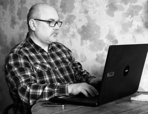

- Навыки
-
Тестирование ПО
Кроссбраузерное и кроссплатформенное тестирование ПО, оформление тестовой документации
Анализ требований к ПО
Проектирование тестов, тест-дизайн
Тестирование WEB - интерфейсов
Тестирование на мобильных платформах
Регистрация и отслеживание ошибок в системе баг-трекинга (Jira).
Системное администрирование
Администрирование ОС Linux Ubunty, Debian, CentOS
Администрирование MS Windows Server 2008-2016
- Опыт
-
easyIT (www.easy-it-courses.com)Преподаватель/Тестирование ПО
- Разработка учебных курсов
- Ведение офф-лайн групп слушателей
- Проведение он-лайн трансляций
ПРАТ "СК "Провидна" Системный администратор
- Системное администрирование
- Поддержка и развитие сетевой инфраструктуры
- Обучение персонала
utest.com Тестировщик
- Тестирование десктоп - приложений
- Тестирование WEB - приложений
- Тестирование на мобильных платформах
- Оформление баг-репортов
- Разработка и прохождение тест-кейсов
- Образование
-
Академия государственного управления при Президенте Украины - Харьков
Магистерская диссертация: Внедрение IT технологий в государственное управление
Харьковский политехнический институт - Сумы
Специальность: Инженер-технолог
- Увлечения
- Джаз, бокс ...
- Рекомендации
- Предоставляются по требованию